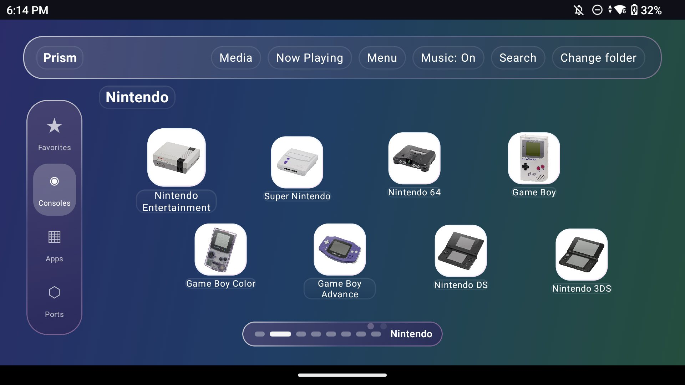
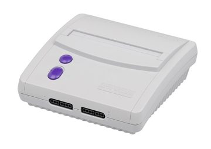
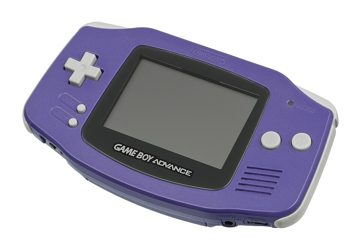
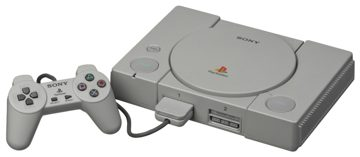
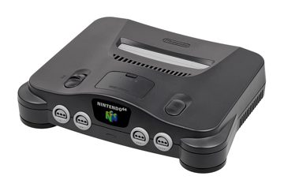
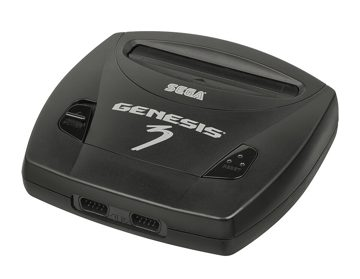
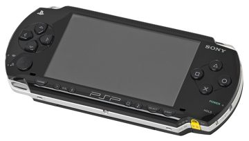
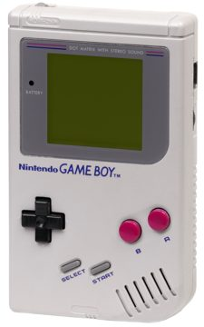
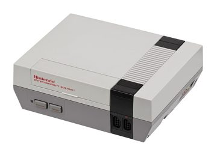
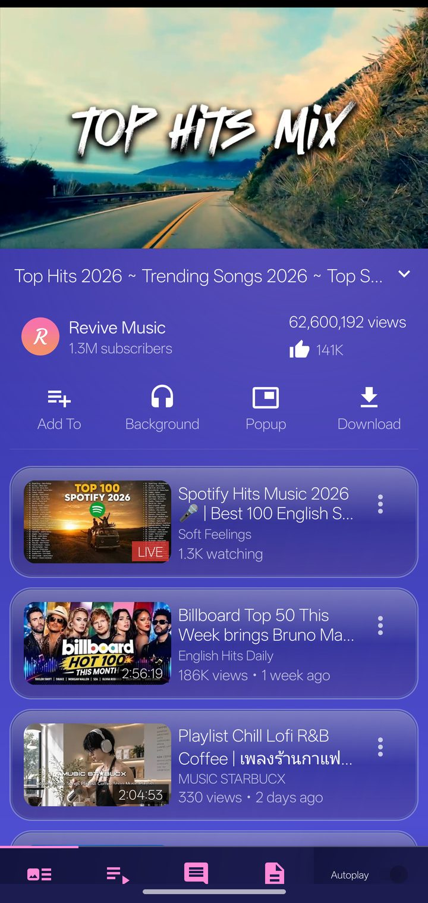

Small apps, made with care.
Free tools I built for my own handheld and phone. If one is useful to you, grab it. If you want to say thanks, there’s a tip jar.

9:41▮▮▮ 82%
Prism⌕ ▶ ⋮
★▦◧⚙








FavoritesConsolesAppsPorts

Midnight Drive
Neon Tapes · 3:42
⏮❚❚⏭
⌂▶♫⚙
Android launcher
Prism Launcher
A frosted-glass home screen for Android gaming handhelds like the Retroid Pocket 6. Console tiles, favorites, gamepad first.
View & download → Video & music playerPrism Player
A glass-styled YouTube and SoundCloud player built on NewPipe. No ads, no account, music that looks like music.
View & download →Support
Free, always. Tips keep it alive.
No ads, no paywall, no tracking. If it made your day nicer, a tip pays for test devices and the time spent on updates. Never required, always appreciated.